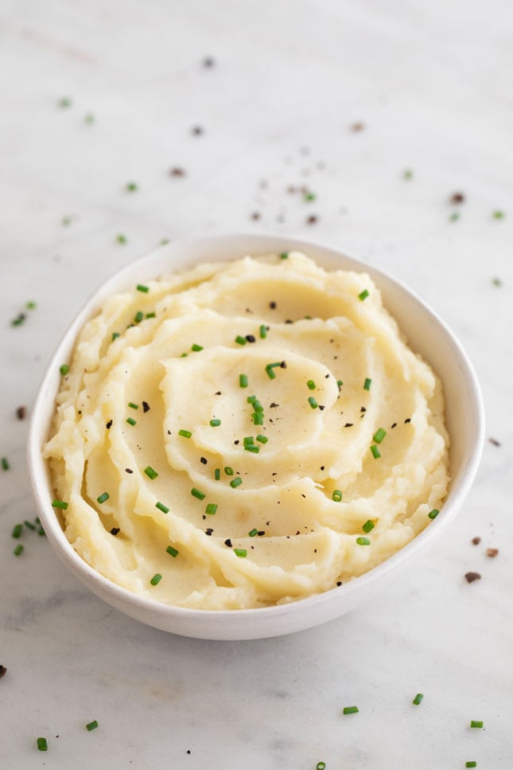

Vegan Mashed Potatoes

A creamy and buttery mashed potato recipe without the cream or butter.
This side dish is quick, easy, delicious, and totally vegan!
Ingredients
- 4-6 large potatoes of choice.
- Oat or almond milk.
- A vegan butter of choice (I recommend Myoko)
- Fresh chives.
- Salt and pepper.
Steps
- First, fill a large pot with water and a bit of salt and bring to a boil.
- Peel all of your potatoes.
- Chop the potatoes up into cubes and add to boiling water.
- Boil until soft, about 20 minutes.
- Strain the potates and place in a bowl.
- Using a masher, or a fork and "elbow grease", mash the poatoes until all large chunks are gone.
- Add peices of butter while the potatoes are still warm and continue to mash.
- Then add about quarter cup of the milk alternative slowly as you continue to mash.
- Continue mash and add more butter or milk to taste and desired consistency.
- Add finely dices chives and stir into the mash.
- Enjoy!